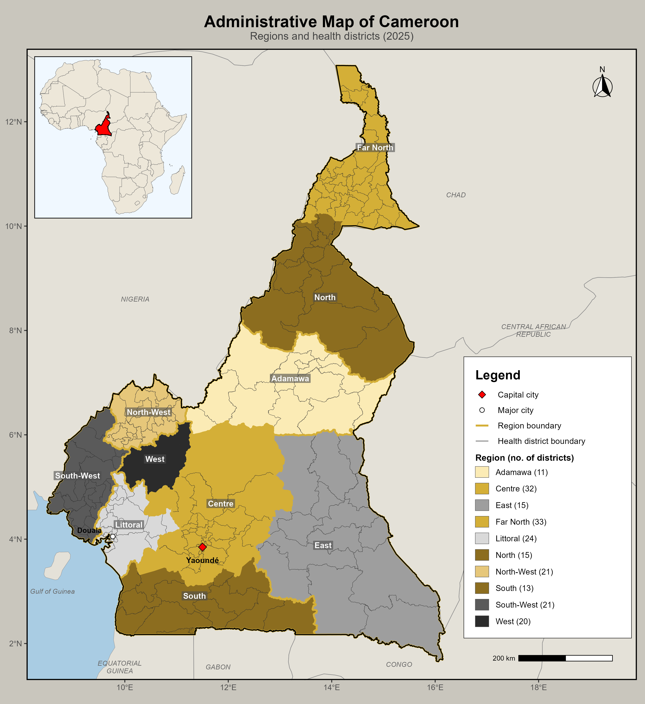
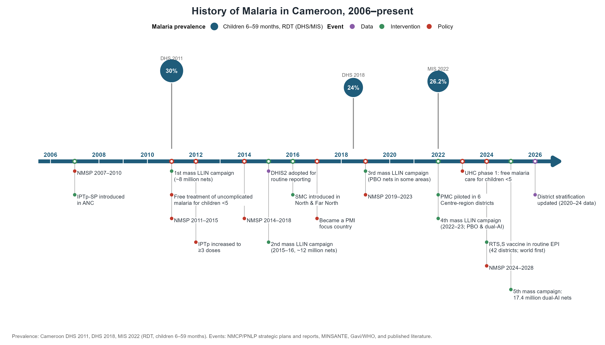
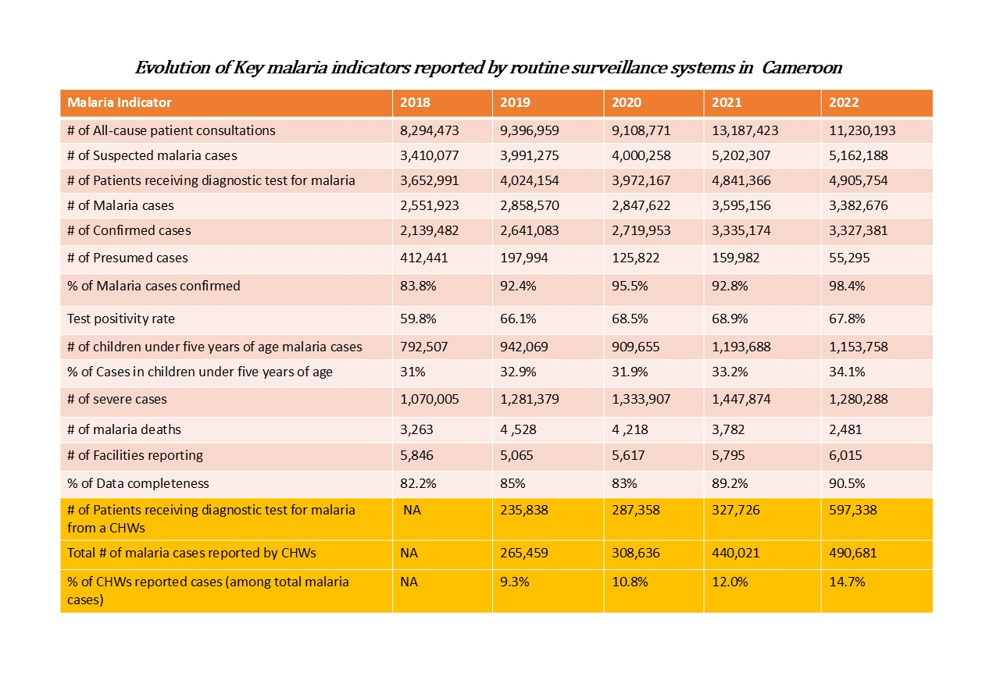
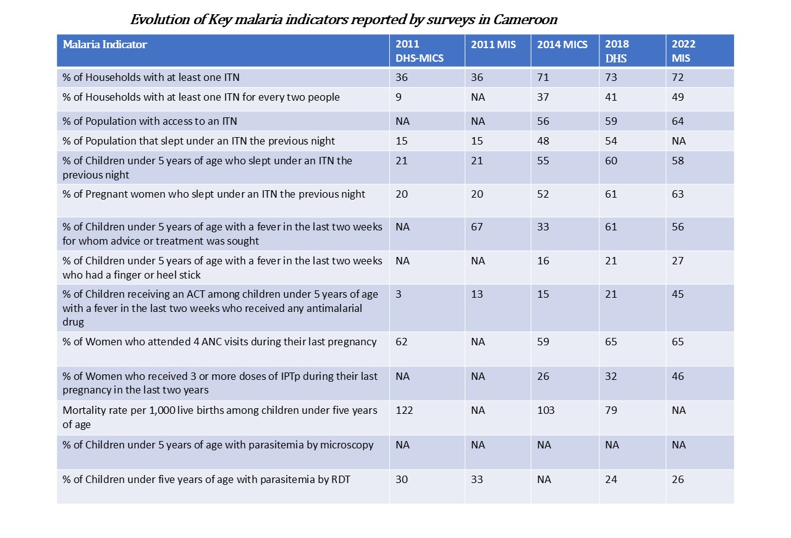
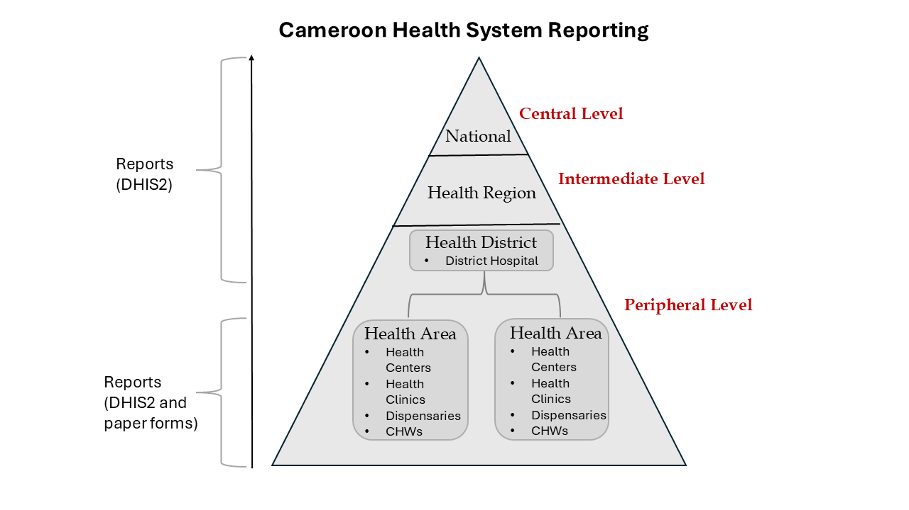
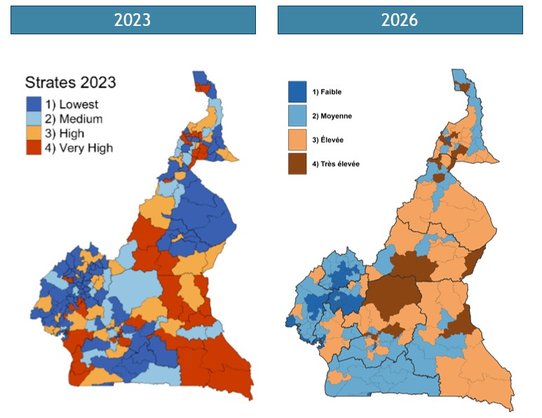
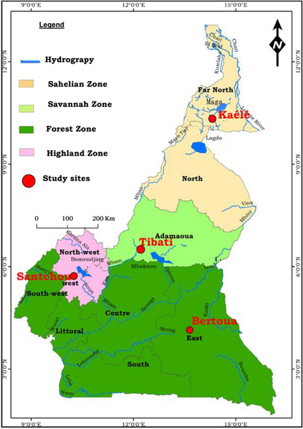

Cameroon
Prepared by: Yasini Kokoda
Date: 2026-10-06
1. Introduction
Cameroon is the country in Central Africa. It borders Nigeria to the west and north, Chad to the northeast, the Central African Republic to the east, and Equatorial Guinea, Gabon, and the Republic of the Congo to the south. The official languages are French and English
2. Summary Statistics
| Statistic | Value | Year | Source |
|---|---|---|---|
| Population | 29,123,743 | 2024 | National Institute of Statistics (INS) |
| Population at risk | 100% | 2024 | WHO country profiles 2026 |
| Prevalence | 26% | 2022 | MIS 2022 |
| Incidence | 260 per 1,000 population | 2024 | World malaria report 2025 |
| Mortality | 64.8 per 1,000 population | 2024 | UN IGME Child Mortality Report 2025 |
| Capital city | Yaoundé | 2026 | Wikipedia |
| Economic activities & geography | It covers approximately 475,400 km², with about 44.6% of the population residing in rural areas and 55.4% in urban areas. | ||
| Key economic activities include agriculture, livestock keeping, fishing, mining, manufacturing, trade, and services, with agriculture remaining an important source of income. | 2022 |
3. Administrative Boundaries
Cameroon is divided into 10 semi-autonomous regions, governed by elected Regional Councils and overseen by presidential appointed governors. Regions are further divided into 58 divisions (départements), led by divisional officers (préfets), and subdivided into 360 sub-divisions (arrondissements) managed by assistant divisional officers (sous-préfets). The smallest units, districts, are administered by district heads (chefs de district) and are found in remote or large sub-divisions. The administrative and health systems are distinct but overlap at the regional level. The health system’s 200 districts are where malaria decisions are tailored to local needs.
Figure: cmr_admin_boundaries.png

Caption: Administrative map of Cameroon showing the 10 regions and their health districts (2025 boundaries; 205 district polygons). · Source: Health district boundaries from the Cameroon DHIS2 organisation-unit shapefile (2025); neighbouring country boundaries from Natural Earth.
4. Malaria Situation
Cameroon remains among the 15 countries with the highest malaria burden globally, accounting for an estimated 2.7% of global malaria cases and 1.9% of global malaria deaths in 2024, as well as approximately 11.6% of cases in the WHO Central African subregion, the third-highest share in the subregion. Despite this substantial burden, malaria case incidence decreased by 3.9%, from 271 cases per 1,000 population at risk in 2015 to 260 per 1,000 in 2024, while the malaria mortality rate declined by 25.1%, from 0.54 to 0.40 deaths per 1,000 population at risk over the same period (WMR 2025).
Against this background, children under five and pregnant women remain among the population groups most vulnerable to malaria in Cameroon, as in other sub-Saharan African countries. Malaria continues to be a major cause of morbidity and mortality among young children and an important contributor to maternal and newborn health complications (National Institute of Statistics data brief on malaria in children under five 2025, National Institute of Statistics data brief on malaria in pregnant women). Among children aged 6–59 months, the 2022 Cameroon Malaria Indicator Survey estimated malaria prevalence at 26%. Transmission was highly heterogeneous, with prevalence highest in the Centre region excluding Yaoundé (49.1%), South (45.6%), and East (41.4%), and lowest in Douala (7%), Yaoundé (10%), and West (19%). Moreover, between 2018 and 2022, malaria prevalence among children under five increased substantially, particularly in the Centre, South, and East regions, rising from 47% to 49% in Centre, 33% to 46% in South, and 35% to 41% in East, respectively. Consequently, national prevalence also increased from 24% to 26% over the same period (Cameroon MIS 2022).
In response to this burden, Cameroon has implemented malaria prevention interventions targeting vulnerable populations, although coverage remains uneven across the country. Among children under five, 57.6% slept under an insecticide-treated net (ITN) the night before the 2022 survey, with the highest use observed in the Far North (83.5%), North (72.3%), and Adamawa (62.3%), and the lowest in West (33.2%), North-West (39.6%), and East (41.7%). Among women with a live birth in the preceding two years, 46% received at least three doses of intermittent preventive treatment during pregnancy (IPTp3+); coverage was highest in North-West and South-West (69% each) and Douala (56%), and lowest in South (30%), Centre excluding Yaoundé (33%), and West (37%) (Cameroon MIS 2022).
However, challenges in malaria case management remain. In 2020, 66.5% of malaria cases in Cameroon were categorized as severe, resulting in consequent irrational use of injectable artesunate. The NMCP developed a plan to address severe malaria overdiagnosis, targeting 1,000 priority health facilities that reported 61% of the country’s severe malaria cases. Strategic actions included capacity strengthening, intensified monitoring and evaluation, social and behaviour change (SBC), control missions through targeted supervision visits, and performance-based purchasing to incentivize correct case management practices. Only the first two actions were implemented and may have contributed to the 19% reduction in severe malaria cases observed in these priority facilities (PMI, Cameroon malaria operational plan FY 2024). Overall, these patterns underscore the need for targeted malaria prevention, diagnosis, treatment, and surveillance efforts nationwide.
5. History of Malaria
The graphic below illustrates the evolution of malaria in Cameroon since 2006, highlighting major milestones, policy changes, the development and implementation of key malaria interventions, and changes in malaria prevalence over the same period. Malaria prevalence estimates are based on data from the Demographic and Health Surveys (DHS) and Malaria Indicator Surveys (MIS).
More recent milestones include the deployment of perennial malaria chemoprevention (PMC) in 2022 in areas with perennial malaria transmission, including the Centre Region; the introduction of Universal Health Coverage (UHC) in 2022, which included free malaria treatment for children under five years of age; and the continued implementation of seasonal malaria chemoprevention (SMC), supported by PMI, in the North and Far North regions. In 2025, Cameroon conducted a nationwide free distribution campaign of insecticide-treated nets (ITNs), with particular attention to vulnerable populations, including children in orphanages and boarding schools, prisoners, and patients admitted to hospitals (Cameroon Ministry of Public Health, 2025).
The country’s malaria control efforts have also been guided by successive National Malaria Strategic Plans (NMSPs), with four plans implemented over different periods. The current NMSP covers the period 2024–2028 and provides the strategic framework for the country’s ongoing malaria control and elimination efforts.
Additional events:
- PMC rolled out in 2022
- National Mass ITN campaign in 2022
- Cameroon launched phase 1 of UHC in 2022
- SMC campaign in North and Far-North by PMI in 2023
- PMC was introduced in 2023
- Mass campaign of LLINs (PBO, Dual AI) in 2025
Figure: cmr_timeline.png

Caption: History of malaria in Cameroon, 2006–present: malaria prevalence among children 6–59 months by RDT (DHS 2011: 30.0%; DHS 2018: 24.0%; MIS 2022: 26.2%) and key policy, intervention and data milestones · Source: Prevalence: DHS Program API / STATcompiler; events: Antonio-Nkondjio et al., 2019, Global Fund concept note 2014, PSNLP 2024–2028, Malaria Journal 2023 (SMC), PSI Plus Project (PMC), MINSANTE (UHC), Severe Malaria Observatory (IPTp), Malaria Journal 2020 (IPTp ≥3 doses), USAID 2017 (PMI), Gavi (RTS,S), MINSANTE (5th ITN campaign)
6. Malaria Indicator Summary
6a. DHIS2-derived indicators

Source: NMCP routine surveillance data (DHIS2), from the previous Cameroon country profile [confirm original source].
6b. Survey-derived indicators

Source: Cameroon DHS-MICS 2011, MIS 2011, MICS 2014, DHS 2018 and MIS 2022, from the previous Cameroon country profile [confirm original source].
7. Health System
Cameroon’s health system is organised as a three-level pyramid (central, intermediate and peripheral), with administrative, care-delivery and community-dialogue structures at each level (MINSANTE, 2021, Table 1). The central level — the Ministry of Public Health (MINSANTE) and its technical directorates and programmes — is responsible for policy development, coordination, regulation and supervision, and oversees general, central and university teaching hospitals (MINSANTE, 2021). The intermediate level comprises 10 Regional Delegations of Public Health, one per administrative region, together with 14 regional hospitals and the Regional Funds for Health Promotion; it provides coordination, supervision and technical support to health districts (MINSANTE, 2021; PMI, 2023). Health administration is deconcentrated through these regional delegations, while Law No. 2019/024 transfers selected health competences — notably building, equipping and managing health facilities in line with the health map — to regional and municipal authorities (Republic of Cameroon, 2019, Arts. 160 and 270). The peripheral level delivers services through health districts subdivided into health areas: 200 districts and 1,795 health areas were reported in 2023 (PMI, 2023), although district counts have risen with ongoing redistricting (203 in 2023–2024 MINSANTE sources; MINSANTE, 2023). Districts are served by district hospitals (category 4), sub-divisional medical centres (CMA, category 5) and integrated health centres (CSI, category 6), alongside dispensaries and private clinics (MINSANTE, 2021; MINSANTE/DOSTS, 2023). In 2020, DHIS2 listed 5,966 public and private health facilities, of which 53% were private (41% private secular and 12% private faith-based) (MINSANTE, 2021, Table 15); about 6,000–6,100 facilities reported into DHIS2 in 2022 (PMI, 2023, Table 6). Care is provided by public, private for-profit, private not-for-profit (faith-based and NGO) and traditional-medicine sub-sectors, the last of which remains largely unregulated (MINSANTE, 2021).
Cameroon’s community health system relies on multi-purpose community health workers (ASCp). Since 2016, community-driven interventions have been harmonised based on UNICEF pilot studies, and multi-purpose CHWs have been trained to promote health and to prevent and manage most health problems in their communities, including malaria. The country has about 9,519 multi-purpose CHWs in 120 health districts, against a total need of at least 11,000, not counting the additional needs of insecure areas. The need is based on population size and setting: one CHW per 1,000 inhabitants in rural areas and one per 2,500 in urban areas. CHWs offer a defined package of curative, preventive and promotional services and are placed under the technical guidance of the lead health facility of their health area, which also supplies them with medicines. About 9,000 CHWs currently provide integrated community case management (iCCM), against a national target of 15,000, and they are authorised to test and treat malaria in all ages. They also deliver SMC to children 3–59 months in the North and Far North regions, and community IPTp (from the second dose) in conflict-affected areas of the North-West, South-West and Far North. CHWs are funded by several partners, including the Global Fund, PMI, UNICEF and JHPIEGO. They are considered volunteers; a legal framework for community participation, which would make them eligible for a minimum monthly stipend of 40,000 CFA, has been submitted to the Prime Minister for signature. In 2022, CHWs tested 597,338 patients and reported 490,681 malaria cases, 14.7% of all malaria cases, up from 9.3% in 2019. However, CHW coverage remains low, and areas of insecurity still need to be fully covered (PMI Cameroon Malaria Profile, 2023). More recent figures from November 2024 show the multi-purpose CHW approach in place in 138 of the 205 health districts, with 9,932 ASCp working there out of a projected 25,000, a coverage rate of 39.7% (UNICEF Cameroon, 2024).
Figure: cmr_healthsystem.PNG

Caption: Three-tier structure of the Cameroon health system (central, intermediate and peripheral levels) and the flow of routine data: health areas (health centres, clinics, dispensaries and CHWs) report through DHIS2 and paper forms; health districts and regions report through DHIS2 · Source: [source of the diagram]
Figure (if available): [filename — health facility mapping, via HFR] Caption: [ ] · Source: [ ]
8. Stratification Maps
The epidemiological stratification map for Cameroon was last updated in 2026. The update was carried out by the NMCP with CHAI and the Malaria Atlas Project (MAP), and it replaces the 2023 version using district-level data for 2020–2024. The map was built in two steps. First, each of the 203 health districts was given a morbidity score from two indicators. One was routine malaria incidence from DHIS2, adjusted in three stages using the WHO method: for testing, for reporting completeness and for care-seeking from all sources. The other was MAP-modelled Plasmodium falciparum prevalence (PfPR). Each indicator was averaged over 2020–2024 and scored by category. Adjusted incidence was scored 2 for below 100 cases per 1,000, 3 for 100–249, 4 for 250–449 and 5 for 450 or more. PfPR was scored 1 for below 1%, 2 for 1–9%, 3 for 10–34% and 4 for 35% or more. The two scores were added together, and the total (3–9) was grouped into four morbidity levels: 1 (3–4), 2 (5–6), 3 (7–8) and 4 (9).
Second, the morbidity level was combined with the under-5 malaria death rate, also averaged over 2020–2024. This rate was scored 2 for below 20 deaths per 100,000, 3 for 20–49, 4 for 50–74, 5 for 75–99 and 6 for 100 or more. The sum gave a final score from 3 to 10, which placed each district in one of four risk levels: Low (3–4), Moderate (5–6), High (7–8) or Very high (9–10). Figure below shows the resulting map of malaria risk levels across the country’s health districts.
Figure: cmr_stratification_2026.jpg

Caption: Health-district malaria risk stratification, Cameroon, 2023 (left) and 2026 update (right). 2026 strata: 1) Faible (low), 2) Moyenne (moderate), 3) Élevée (high), 4) Très élevée (very high); based on 2020–2024 adjusted incidence, MAP PfPR and under-5 malaria mortality · Source: National Malaria Control Programme (NMCP), with CHAI and the Malaria Atlas Project (MAP), 2026
9. Environment and Seasonality
Cameroon has four broad malaria eco-epidemiological settings, characterized by differences in topography, temperature, rainfall, humidity, and transmission seasonality.
The Sudano-Sahelian zone, covering the Far North and North regions, comprises hot, semi-arid plains and Savannah, with temperatures of approximately 28–40°C, low humidity, and annual rainfall of 500–1,200 mm. The rainy season runs mainly from June to September, with malaria transmission typically peaking between June and October.
The High Guinea Savannah zone, centred on Adamawa Region, consists of an elevated Savannah plateau, with temperatures of approximately 12–34°C and annual rainfall of 1,200–1,600 mm. The rainy season extends from March to October, and malaria transmission generally peaks during the rainy months, particularly June–October.
The Humid Savannah zone, covering the Northwest and western highlands, features elevated grasslands, hills, and valleys, with cooler temperatures of approximately 15–28°C and annual rainfall that can reach 2,000–3,000 mm. The rainy season generally spans March–October, with malaria transmission increasing during and after the rains.
The Humid Forest zone, covering the Southwest, Littoral, Centre, South, and East regions, includes coastal lowlands, dense forests, and river networks. Temperatures generally range from 17–34°C, with high humidity and substantial rainfall. The Southwest experiences a prolonged rainy season, while much of the remaining forest zone has two rainy seasons, broadly March–June and September–November. Malaria transmission occurs throughout the year, with seasonal increases during and after the rains (Nelly Armanda Kala Chouakeu,et.al, 2023).
Figure: cmr_climate_zones.jpg

Caption: Eco-epidemiological zones of Cameroon (Sahelian, Savannah, Forest and Highland) with major rivers and lakes; red dots mark the study sites (Kaélé, Tibati, Santchou, Bertoua) of the source study · Source: confirm — e.g. Kala Chouakeu et al., 2023
10. Vector Profile
The principal malaria vectors in Cameroon include Anopheles gambiae s.s., An. coluzzii, An. arabiensis, An. funestus s.s., An. nili, and An. moucheti, which together account for most malaria transmission in the country. Their distribution varies geographically: An. arabiensis is more prevalent in the drier northern areas, whereas An. moucheti and An. nili are associated mainly with humid forest environments in the south. An. gambiae s.l. and An. funestus are widespread across multiple ecological settings. These vectors differ in their breeding habitats and biting behaviour, and local populations can sustain both indoor and outdoor transmission. (Tabue et al., 2025; Antonio-Nkondjio et al., 2021).
Insecticide resistance is widespread among malaria vectors in Cameroon, particularly resistance to pyrethroids, which are used in insecticide-treated nets. A study across seven localities representing different ecological settings tested 9,813 An. gambiae s.l. mosquitoes and found substantial resistance to permethrin and deltamethrin. Mortality was below 70% for both insecticides in nearly all study sites, indicating resistance; resistance intensity was moderate to high for permethrin and high in most sites for deltamethrin. Molecular analyses detected the kdr L1014F resistance allele at frequencies above 75% in most sites, while L1014S occurred at lower frequencies in Njombé and Tibati. Pre-exposure to piperonyl butoxide (PBO) increased mortality, indicating a contribution from metabolic resistance mechanisms, although the degree of restoration varied between locations. (Kala-Chouakeu et al., 2022).
PMC
More recent studies indicate that resistance also affects An. funestus. In Mibellon, Adamawa Region, four-year monitoring found that mortality of An. funestus s.s. exposed to permethrin declined from 77.7% in 2015 to 23.2% in 2023, while mortality following deltamethrin exposure declined from 46.6% in 2016 to 8.5% in 2023. High-intensity resistance was observed to all tested pyrethroids, and PBO only partially restored susceptibility, suggesting that resistance mechanisms beyond P450-mediated detoxification are involved. In the western highlands, a 2026 study in Penka-Michel also identified widespread molecular resistance markers, including L1014F and metabolic resistance-associated mutations, in local vector populations. These findings reinforce concerns about the continuing effectiveness of pyrethroid-only nets. (Tazokong et al., 2026; Kiam et al., 2026).
PMC +1
Resistance to non-pyrethroid insecticides is also emerging, although the evidence is more geographically limited. A 2025 study in Belabo and Ouami, East Region, found An. gambiae s.l. resistant to bendiocarb but susceptible to malathion; resistance intensity to pyrethroids was high, and none of the 48 tested bed nets achieved effective mosquito mortality in cone bioassays. Another 2025 study found that An. funestus s.s. populations from Mibellon and Elende remained susceptible to pirimiphos-methyl and malathion, whereas An. gambiae s.s. showed resistance to these organophosphates in Mangoum and Nkolondom. This variation highlights the need for species-specific and location-specific resistance monitoring rather than assuming that an alternative insecticide will be effective nationwide. (Ndjeunia-Mbiakop et al., 2025; Dandi-Labou et al., 2025
Figure (maps recommended): [filename — vector distribution map] Caption: [ ] · Source: [ ]
Resistance profile: [free text or table of resistance findings by species/insecticide class, with year and source]
11. References
One row per reference. Tag must be one of: Intervention · Resistance · Epidemiology · Diagnostics · Vector Bionomics · Health System · Policy/Strategic Plan
| Title | URL | Description | Tag |
|---|---|---|---|
| [ ] | [ ] | [ ] | [ ] |
| [ ] | [ ] | [ ] | [ ] |
Anything else DET should know
[Optional — flag any data gaps, uncertainty about a figure, or questions here rather than leaving DET to guess.]